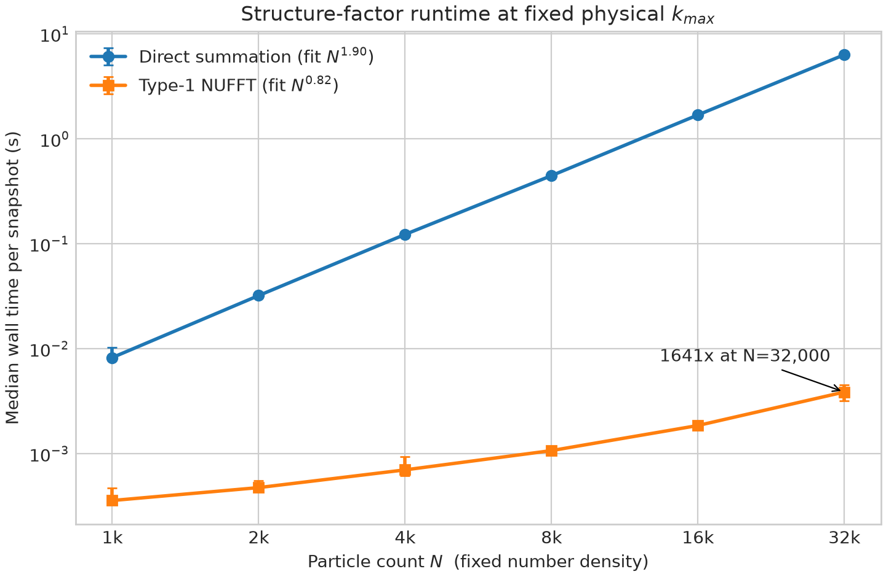
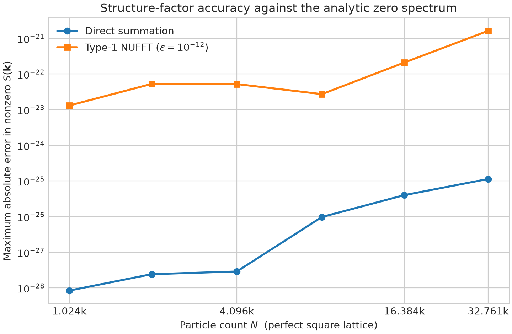

结构因子描述密度涨落在波数空间中的分布。小波数对应大尺度结构，因此 常用于判断体系是普通涨落、超均匀，还是具有巨数涨落。本文固定 Fourier 约定，推导 与实空间关联函数、窗口内粒子数涨落和动态结构因子之间的关系，并给出周期性模拟中的计算方法。
1. 定义与 Fourier 约定
考虑 维周期性立方盒，体积为 ，其中有 个点粒子，平均数密度为
微观密度场定义为
采用 Fourier 约定
其中 。由于 为实场，。
令
静态结构因子定义为
对于平移不变的均匀体系，任意非零允许波矢均满足 ，因此
在固定粒子数的系综中，，所以 是粒子数约束导致的平凡结果。讨论 时，应使用一系列非零允许波矢，而不是把零模当作小波数数据点。
若体系各向同性，可对模长相近的波矢作壳平均并记为 ，其中 。各向异性体系则应保留完整的 。
2. 与实空间密度关联函数的关系
定义连通密度关联函数
利用平移不变性，对非零波矢有
若以径向分布函数 表示二体关联，并定义总关联函数 ，则
从而
自关联产生常数项 ；粒子间关联决定 相对于泊松分布的偏离。理想泊松点过程满足 ，所以
2.1 两个常见的 Fourier 渐近例子
若关联函数具有不可积的长程幂律尾部
则其小波数非解析部分满足
由于 ，这种长程正关联对应小波数发散，而不是超均匀性。
作为短程关联的简单例子，若某一关联贡献按 衰减，则
因此它在 时是解析的，首个修正为 ；在 时按 衰减。这里讨论的是单个指数关联贡献，完整结构因子还可能包含自关联和其他关联项。
3. 超均匀、普通涨落与巨数涨落
若非零波矢的结构因子满足
则可按指数 区分三种大尺度行为：
- ：，体系是超均匀的；
- ： 趋于非零常数，对应普通体积标度涨落；
- ： 发散，对应巨数涨落。
超均匀性要求长波密度涨落被抑制。由
可见，在热力学极限下，超均匀点过程满足总和规则
这个负的积分表示粒子间反关联恰好抵消自关联在零波数处的贡献。由 直接推断 的尾部需要额外正则性条件；不能对任意 无条件写成同一个实空间幂律。
4. 窗口内粒子数涨落
设 是尺度为 的观察窗口指标函数：窗口内取 ，窗口外取 。窗口内粒子数为
定义窗口重叠核
粒子数方差在实空间中为
在 Fourier 空间中为
若 ，则
对球形或具有足够规则边界的窗口，若 ，则大 渐近行为为
其中 对应巨数涨落， 给出泊松型体积标度， 对应超均匀但仍大于表面积标度的方差。 时，窗口边界主导渐近行为。
由于平均粒子数满足 ，若忽略 的对数修正并写成
则
在 时还要乘以 ，因此不能仅用一个纯幂指数完整描述。对于与晶格方向锁定的非球形窗口，数目方差还可能依赖窗口形状和取向。
5. 独立随机位移是否破坏超均匀性
在吸收态模型中，常用“自然初态”构造是：先让体系进入吸收态，再对每个粒子施加小位移以重新激活体系。设
其中位移 独立同分布，并与原始粒子构型独立。定义位移分布的特征函数
对任意非零波矢，位移后的结构因子精确满足
推导的关键是区分 的自关联项和 的粒子间关联项：前者恒为 ，后者被 乘法修正。
若位移分布均值为零、各向同性且具有有限四阶矩，并定义单个笛卡尔分量的方差为
则
因此
若原体系满足 且 ，则位移后的小波数指数为
具体地：
- 时，原来的 项占主导，指数不变；
- 时，位移改变 项的系数；
- 时，独立有限方差位移生成 项，将指数降为 。
因此这类位移不会把超均匀体系变成普通泊松体系，但会把强于 的小波数抑制截断到 。若位移具有空间关联、重尾分布或与初始构型相关，上述结论需要重新推导。
6. 吸收态转变中的超均匀指数
守恒有向渗流（conserved directed percolation, C-DP）、Manna 模型和随机组织模型的临界吸收态可以出现超均匀性，但其指数关系仍涉及活跃研究。
较早的工作基于 C-DP 与 quenched Edwards–Wilkinson depinning 的映射，提出过
其中 是 depinning 粗糙度指数。这个关系应标记为历史猜想，而不是确定标度律。
后续 Doi–Peliti 场论指出，C-DP 在 附近的超均匀指数为
并明确否定了上述简单 depinning 标度关系。更新的随机组织场论进一步指出，守恒噪声可能是危险无关变量，使随机组织与 C-DP 共享若干临界指数，却具有不同的超均匀指数。因此，分析具体模型时应说明模型、噪声结构、维数和所采用的理论或数值估计，不能把单一公式普遍用于所有吸收态模型。
7. 动态结构因子
对时间平移不变的稳态，定义中间散射函数
动态结构因子定义为
静态结构因子是等时关联
并满足频率总和规则
若体系在小波数下只有一个特征频率尺度 ，则与总和规则一致的动态标度形式是
其中标度函数归一化为
7.1 扩散密度模
对线性扩散模，若
则
若静态结构因子满足 ，零频附近谱峰的宽度按 缩小，而峰高按 标度。
7.2 热扩散峰与声峰
简单流体同时具有位于 的 Rayleigh 热扩散峰和位于 的 Brillouin 声峰。忽略更高阶修正时，可写成归一化的示意形式
其中 。、 的具体热力学权重以及 、、 取决于模型。这个谱同时含有传播尺度 和衰减尺度 ，因此不能用单一动态指数完整描述。
静态 回答“每个尺度上有多少密度涨落”，动态 进一步区分这些涨落是扩散、传播还是弛豫，以及相应的时间尺度。
非稳态体系不具备时间平移不变性，应使用双时间关联 ，而不能直接套用只依赖时间差的 。
8. 周期性粒子模拟中如何计算
8.1 单个构型
对边长为 的二维周期性方盒，允许波矢为
对每个非零波矢计算
以及单构型散射强度
平移不变体系的 是 的系综平均。实际模拟通常用多个充分间隔的稳态快照估计该平均；若样本在时间上相关，应估计有效独立样本数和误差。
8.2 壳平均
只有在体系预期各向同性时，才将 落入同一窄区间的模式平均成 。建议同时记录每个壳内的平均 、模式数和跨快照误差。正方盒不禁止按照模长分箱，但原始采样点必须来自笛卡尔倒格矢，不能把任意连续极坐标波矢当作周期边界下的允许模式。
下面的 C++ 示例同时对独立波矢和快照累加，并显式跳过零模：
#include <cmath>
#include <complex>
#include <cstddef>
#include <vector>
struct Particle {
double x;
double y;
};
void accumulate_radial_sk(
const std::vector<Particle>& particles,
double box_length,
int n_max,
double delta_k,
std::vector<double>& k_sum,
std::vector<double>& sk_sum,
std::vector<std::size_t>& sample_count
) {
if (particles.empty() || box_length <= 0.0 || delta_k <= 0.0) {
return;
}
constexpr double PI = 3.14159265358979323846;
const double k_min = 2.0 * PI / box_length;
const double inv_n = 1.0 / static_cast<double>(particles.size());
for (int n_x = -n_max; n_x <= n_max; ++n_x) {
for (int n_y = -n_max; n_y <= n_max; ++n_y) {
// 跳过零模，并只保留 ±k 中的一个，避免重复计数。
if (n_x < 0 || (n_x == 0 && n_y <= 0)) {
continue;
}
const double k_x = k_min * static_cast<double>(n_x);
const double k_y = k_min * static_cast<double>(n_y);
const double k = std::hypot(k_x, k_y);
const std::size_t bin =
static_cast<std::size_t>(std::floor(k / delta_k));
if (bin >= sk_sum.size() ||
bin >= k_sum.size() ||
bin >= sample_count.size()) {
continue;
}
std::complex<double> rho_k{0.0, 0.0};
for (const Particle& particle : particles) {
const double phase = k_x * particle.x + k_y * particle.y;
rho_k += std::complex<double>{
std::cos(phase), -std::sin(phase)
};
}
const double sk = std::norm(rho_k) * inv_n;
k_sum[bin] += k;
sk_sum[bin] += sk;
sample_count[bin] += 1;
}
}
}
完成所有快照后，对每个非空分箱输出
这里的 同时计入壳内模式和快照。若要估计统计误差，不应把同一快照中的不同波矢或 简单当作完全独立样本；更稳妥的做法是先对每个快照完成壳平均，再对快照平均并进行阻塞分析。
8.3 使用 Type-1 NUFFT 加速
直接求和需要对每个粒子和每个波矢计算复指数。若共有 个粒子和 个 Fourier 模式，其计算量为 。当粒子坐标是连续值、但目标波矢仍是周期盒允许的规则倒格矢时，可以使用 Type-1 非均匀快速 Fourier 变换（nonuniform fast Fourier transform, NUFFT）。
定义缩放后的周期坐标
Type-1 NUFFT 一次计算所有整数模式
它们正好对应物理波矢
因此 NUFFT 只替换 的计算步骤；随后仍按
计算结构因子，并使用与直接算法完全相同的壳划分。典型 NUFFT 将粒子扩散到过采样网格，执行普通 FFT，再在 Fourier 空间去卷积。若扩散核宽度为 ，其成本近似为
其中 随目标精度提高而缓慢增加。
下面使用 FINUFFT 的二维 Type-1 接口。modeord=0 指定以零模为中心的输出顺序，因此数组中心 [n_max, n_max] 对应 。
import finufft
import numpy as np
def structure_factor_nufft(
positions: np.ndarray,
box_length: float,
n_max: int,
eps: float = 1.0e-12,
nthreads: int = 1,
) -> np.ndarray:
"""Return S(k_x, k_y) for modes -n_max, ..., n_max."""
positions = np.asarray(positions, dtype=np.float64)
if positions.ndim != 2 or positions.shape[1] != 2 or positions.shape[0] == 0:
raise ValueError("positions must have shape (N, 2) with N > 0")
if box_length <= 0.0 or n_max < 0 or nthreads < 1:
raise ValueError("box_length and nthreads must be positive; n_max must be nonnegative")
particle_count = positions.shape[0]
# FINUFFT recommends periodic coordinates in [-pi, pi).
scaled = 2.0 * np.pi * positions / box_length
scaled = (scaled + np.pi) % (2.0 * np.pi) - np.pi
x = np.ascontiguousarray(scaled[:, 0])
y = np.ascontiguousarray(scaled[:, 1])
strengths = np.ones(particle_count, dtype=np.complex128)
mode_count = 2 * n_max + 1
rho_k = finufft.nufft2d1(
x,
y,
strengths,
(mode_count, mode_count),
eps=eps,
isign=-1,
modeord=0,
nthreads=nthreads,
)
sk = np.abs(rho_k) ** 2 / particle_count
sk[n_max, n_max] = np.nan # 固定粒子数下不使用零模。
return sk
把坐标平移到 只会给 乘上依赖于模式的相位，不改变 。若需要逐复数振幅比较，直接求和与 NUFFT 必须使用同一个坐标原点和 Fourier 符号。
与直接求和的数值对比
为了比较随体系尺寸的变化，以下测试固定二维数密度 ，并固定每个 Cartesian 分量的物理截止波数 。因此增大 时有 、，所需 Fourier 模式数 。这比“固定模式数”更接近在不同体系中保持同一空间分辨率的生产计算。两种算法使用同一批粒子、同一组模式和同一壳划分。
速度与复杂度

直接算法采用分块 NumPy 求和，每个尺寸重复三次；FINUFFT 2.5.1 使用双精度、eps=1e-12、单线程，预热后重复七次。图中的点是中位数，误差棒覆盖最小值到最大值。对 到 的后四点作 log--log 拟合，直接求和为 ，接近本协议下的理论标度 ；NUFFT 为 。后者的有限区间指数受固定开销影响，不应解释为渐近复杂度；理论成本仍近似为 。
| 模式数 | 直接求和 | Type-1 NUFFT | 加速比 | |
|---|---|---|---|---|
| 1,000 | 225 | 8.21 ms | 0.357 ms | |
| 2,000 | 441 | 32.0 ms | 0.473 ms | |
| 4,000 | 841 | 0.123 s | 0.698 ms | |
| 8,000 | 1,681 | 0.446 s | 1.07 ms | |
| 16,000 | 3,249 | 1.69 s | 1.85 ms | |
| 32,000 | 6,561 | 6.33 s | 3.86 ms |
在这个固定物理分辨率的扫描中，体系从 增至 时，直接求和耗时增加约 770 倍，而 NUFFT 只增加约 10.8 倍；相应加速比从约 23 增至约 1,641。具体耗时和交叉尺度仍依赖硬件与实现。
准确度
准确度不能用“NUFFT 与直接求和之差”完全定义，因为这会预先把直接求和当作精确答案。下面改用单位间距的完美方格点阵作为解析基准。对于图中选取的全部非零模式，波数都低于第一组倒格矢峰，因而精确结果是 。纵轴画的是全部非零模式中的最大绝对误差；数值越低，算法越准确。

| 直接求和最大 | NUFFT 最大 | |
|---|---|---|
| 1,024 | ||
| 2,025 | ||
| 4,096 | ||
| 8,281 | ||
| 16,384 | ||
| 32,761 |
在这个严格的解析零信号测试中，直接求和的残差比 eps=1e-12 的 NUFFT 小约四至六个数量级；这是 NUFFT 以可控近似换取速度的体现。尽管误差随体系尺寸有波动并总体增大，即使在最大体系中，NUFFT 的最大伪结构因子仍只有 。对于随机点体系，两种算法的最大壳平均差始终低于 ，全部尺寸中的最大壳平均 RMS 相对差为 。
精度随 FINUFFT 容差的收敛如下：
eps |
最大逐模 | 最大壳平均 | 壳平均 RMS 相对差 |
|---|---|---|---|
eps 控制的是 Fourier 变换误差，不保证超均匀指数的统计误差或有限尺寸误差。生产计算中应采用以下验证门槛：
- 使用双精度和
eps=1e-12计算完整谱。 - 对进入小 拟合的最低若干壳，用直接求和逐模复核。
- 比较至少
eps=1e-8, 1e-10, 1e-12三档结果，要求壳平均和拟合指数在目标误差内不再变化。 - 独立改变系统尺寸、快照间隔和拟合窗口；NUFFT 收敛不能替代这些物理与统计收敛检查。
普通“粒子沉积到网格再 FFT”还会引入质量分配窗函数和 aliasing。高阶粒子分配、交错网格和去卷积可以显著减小这些误差，但若目标是连续粒子坐标上的高精度 ，Type-1 NUFFT 提供了更直接、容差可控的路径。
8.4 有限尺寸与拟合注意事项
- 最小非零波数是 。判断 标度必须比较多个系统尺寸。
- 不要把固定粒子数导致的 纳入幂律拟合。
- 拟合区间应同时避开有限尺寸区和粒子尺度附近的高波数区。
- 应报告分箱宽度、每个壳的模式数、快照间隔、样本数和误差估计。
- 若 显示明显角向结构，应报告二维谱，而不是只展示径向平均。
附录： 维球形窗口的形状因子
对半径为 的 维球形窗口，令 。归一化形状因子为
其中 是第一类 Bessel 函数。前三个维数分别为
在大 下，其振荡包络满足 。正是这一慢衰减使 时窗口边界控制粒子数方差的主导标度。
参考资料
- Torquato and Stillinger, Local Density Fluctuations, Hyperuniformity, and Order Metrics
- Gabrielli, Point processes and stochastic displacement fields
- Hexner and Levine, Hyperuniformity of critical absorbing states
- Ma, Pausch, and Cates, Theory of Hyperuniformity at the Absorbing State Transition
- Ma, Pausch, Pruessner, and Cates, Hyperuniformity at the Absorbing State Transition: Perturbative RG for Random Organization
- Hawat et al., On estimating the structure factor of a point process, with applications to hyperuniformity
- Barnett, Magland, and af Klinteberg, A parallel non-uniform fast Fourier transform library based on an exponential of semicircle kernel
- Barnett, Aliasing error of the exponential-of-semicircle kernel in the nonuniform fast Fourier transform
- Sefusatti et al., Accurate Estimators of Correlation Functions in Fourier Space